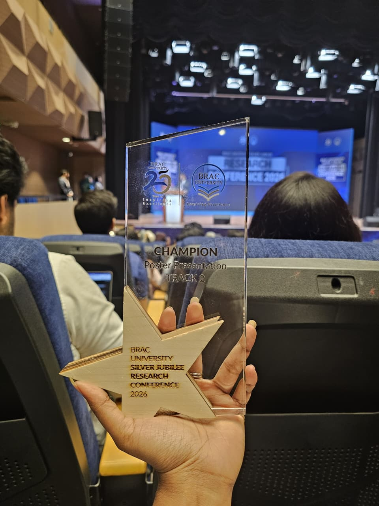
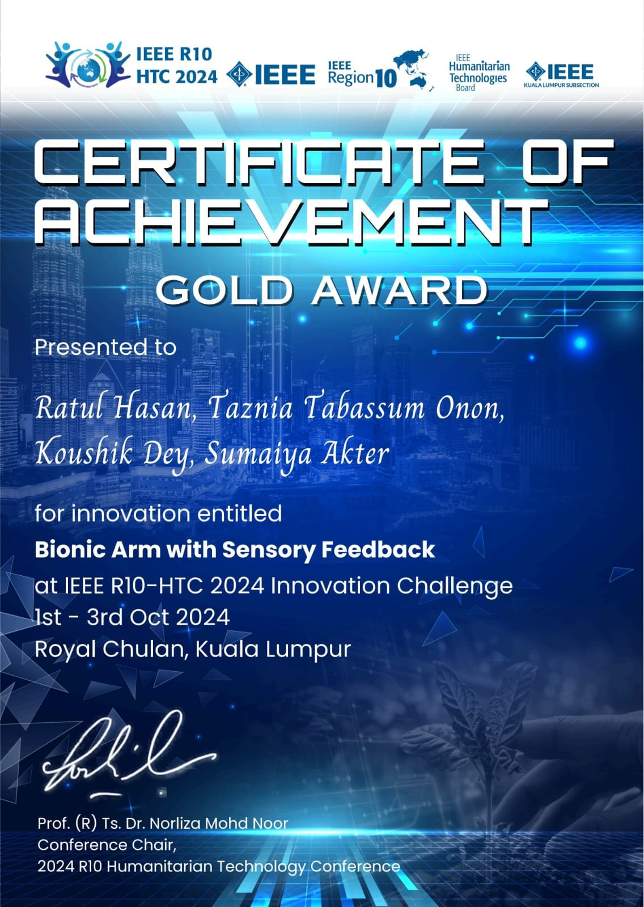
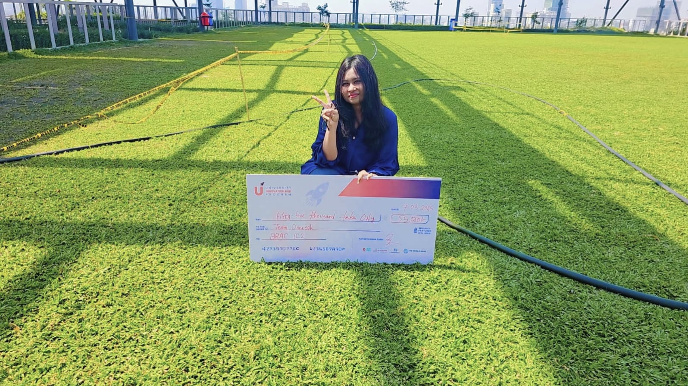
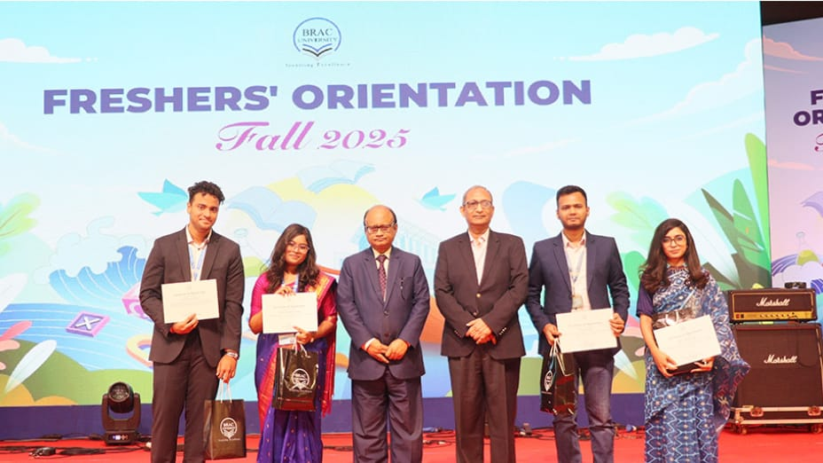
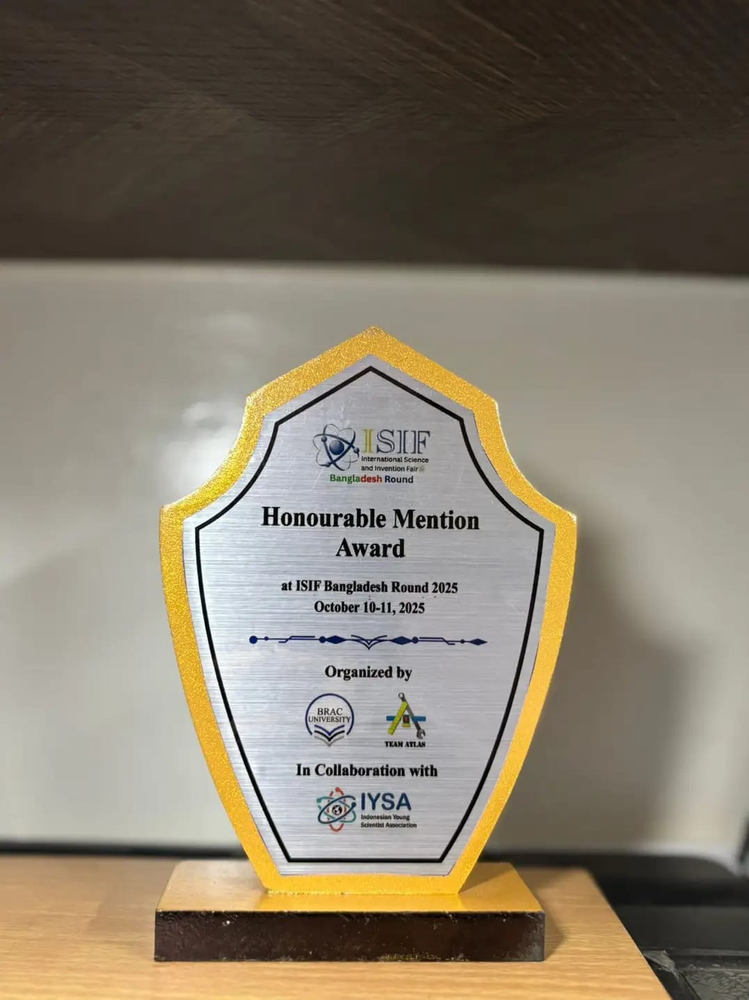
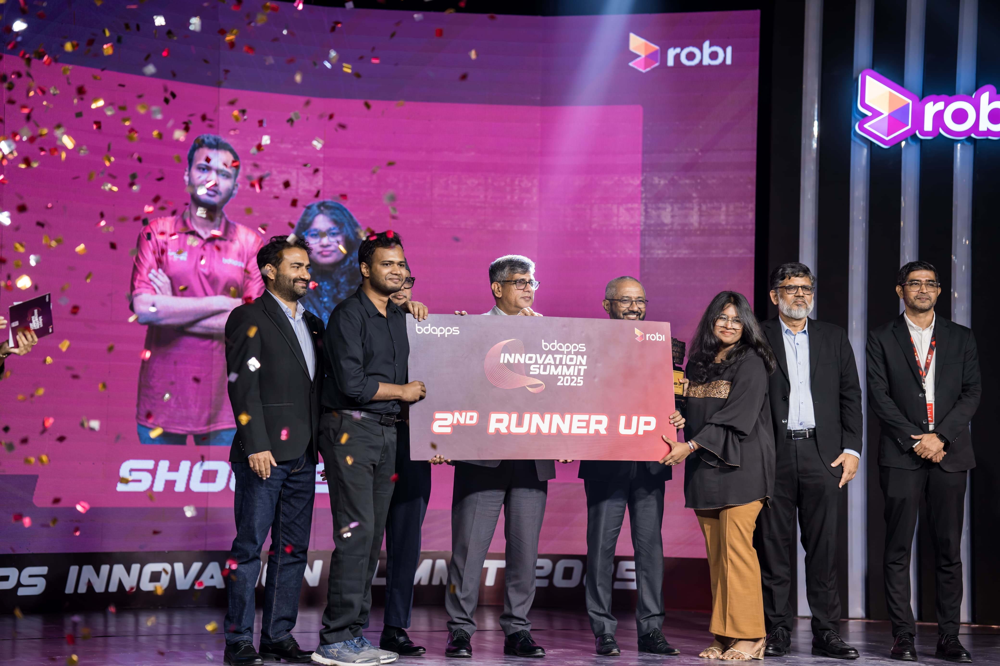
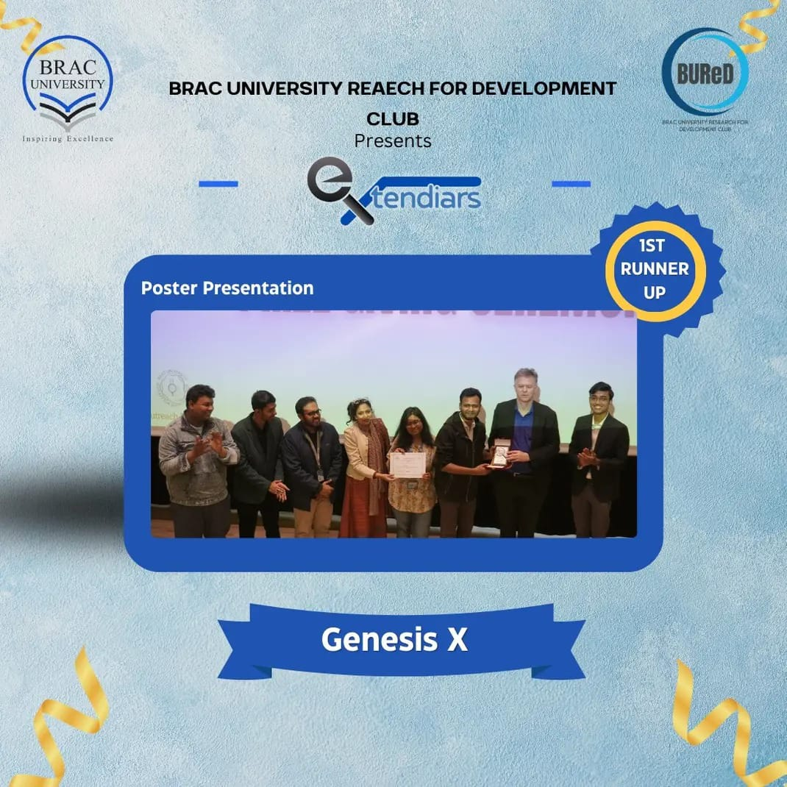
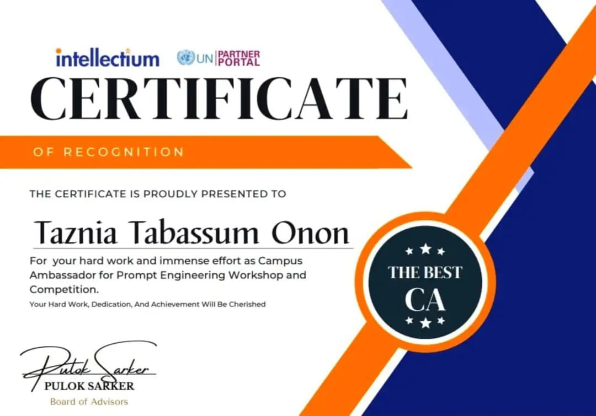

Agentic AI & Decision Support
Knowledge-guided agents, bounded decision-making, edge expert systems, and retrieval that grounds answers in evidence.
Computer Science Researcher
I develop AI and assistive systems that help people make informed decisions in everyday care. My work spans agentic AI, computer vision, and assistive robotics.
BRAC University · Dhaka, Bangladesh
I’m a computer science researcher and BRAC University CSE graduate interested in how AI can support people in everyday care.
A fall can look a lot like someone choosing to lie down. Questions like that are what draw me to research. I enjoy figuring out what a model pays attention to, where it makes mistakes, and what evidence would make me trust its decisions. I explore those questions through agentic AI, computer vision, and assistive robotics.
I also co-founded Onnesok, where I led product operations for web tools and interactive applications.
Knowledge-guided agents, bounded decision-making, edge expert systems, and retrieval that grounds answers in evidence.
Fall detection, behavioral anomalies in video, metric learning for wildlife identification, and multimodal learning.
Affordable prosthetics, closed-loop sensory feedback, embedded controls, and reinforcement learning for locomotion.
Manuscripts and research in progress
Submitted to Engineering Applications of Artificial Intelligence. Studies temporal modeling with cached features for detecting multiple categories of behavioral anomalies in elderly-care video.
Target journal Expert Systems with Applications. Explores how explicit knowledge can guide and constrain agentic assistance on edge devices.
IEEE International Conference on Electrical & Computer Engineering (ICECE 2026). Combines federated learning, vision-language fusion, and PatchCore for chest X-ray analysis.
Developing a framework that combines visual features, body pose, and temporal order to distinguish genuine falls from similar activities such as intentionally lying down. The study uses HARE, a five-class human activity dataset, for training on the Bright Session and testing on 2,046 Dark Session clips, including 248 falls. The goal is to reduce false alarms while maintaining high fall recall under changing lighting conditions.
BRAC University · 2026
An Agentic AI Framework for Anomaly Detection and Intelligent Decision Support in Elderly Care
ADECS pairs video-based anomaly detection with an assistant that can use camera context and room-sensor readings. Its temporal model scores unusual activity, while the assistant handles text and voice questions through a separate path.
Vision Lab · BRAC University
Developed and evaluated video-based approaches for real-time fall detection, focusing on distinguishing falls from routine activity. Supervised by Dr. Aniqua Nusrat Zereen.
Biomedical Science and Engineering Research Center (BIOSE) · BRAC University
Designed and tested real-time finger movement and sensory feedback for a modular prosthetic arm. The work received the IEEE Region 10 Humanitarian Technology Challenge Gold Award.
BRAC University Research and Development Club (BuReD)
Coordinated workshops and symposiums for more than 300 participants and mentored more than 100 students in literature review, research methods, and academic presentation.
BRAC University · Dhaka, Bangladesh
CGPA 3.78 / 4.00. Merit scholar, Dean’s List, and Vice Chancellor’s List.
Undergraduate thesis ADECS, supervised by Prof. Md. Golam Rabiul Alam.
Motijheel Ideal School and College
GPA 5.00 / 5.00
Ideal School and College, Mugda Branch
GPA 4.94 / 5.00

November 2026 · BRAC UniversityTrack 2 Poster Champion
October 2024 · IEEE Region 10Humanitarian Technology Gold Award
2025–2026 · University Innovation Hub ProgramBDT 145,000 in Seed & Pre-Seed Grants
Fall 2025 · BRAC UniversityVice Chancellor’s Special Recognition Award November 2025 · CUETIOTrix National Hackathon Second Runner-Up
November 2025 · CUETIOTrix National Hackathon Second Runner-Up
October 2025 · ISIF BangladeshHonourable Mention
August 2025 · bdapps Innovation SummitShooterX Second Runner-Up
December 2024 · BuReDGenesisX Poster First Runner-Up
March 2024 · IntellectiumBest Campus AmbassadorStudent mentoring & research workshops · 2024–2026
Helped organize research workshops and mentored undergraduates in literature review, research methods, and poster presentation.
Community outreach · May 2024–June 2025
Coordinated online volunteer recruitment and helped share educational programs through social media.
Workshop facilitation · September 2024–June 2025
Facilitated cross-cultural workshops on youth leadership, empathy, and global citizenship.
Campus outreach
Helped build student volunteer networks through campus outreach and received the Best Campus Ambassador award in 2024.
Get in touch about research in human-centered AI and assistive technology.